Find anything you watched
Films, series and anime in one search, with what’s trending this week before you type. Share a link from IMDb, Letterboxd, TMDB or Chrome and it opens ready to log.
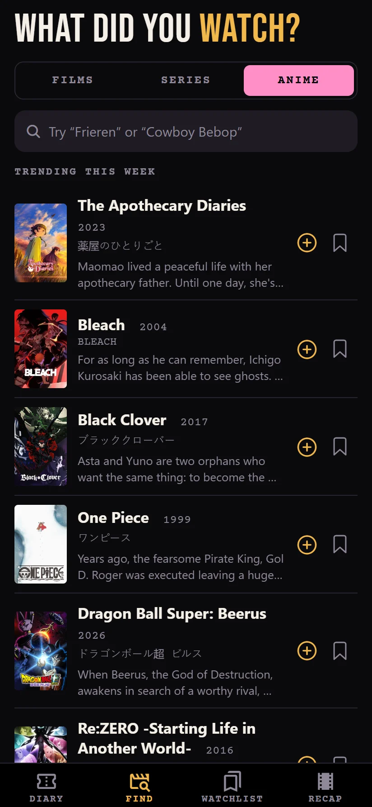
A diary for every film, series and anime you watch. Rate it, review it, and turn each month into an Instagram story.
Free for AndroidNo ads, no account neededAdmit one


Log what you watched and when, with half-star ratings, a heart, rewatches and a review. Each month becomes a reel of film, numbered like a projectionist would: October is reel 10.
Films, series and anime in one search, with what’s trending this week before you type. Share a link from IMDb, Letterboxd, TMDB or Chrome and it opens ready to log.

Slide across the stars to rate, heart the ones you love, mark rewatches, note the season and episodes, and hide spoilers behind a tap.
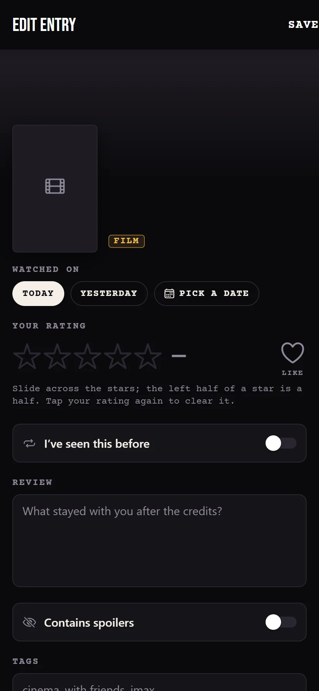
Bookmark what you want to watch. When the evening comes and nobody can choose, Pick for me shows tonight’s feature. Logging it takes it off the list.
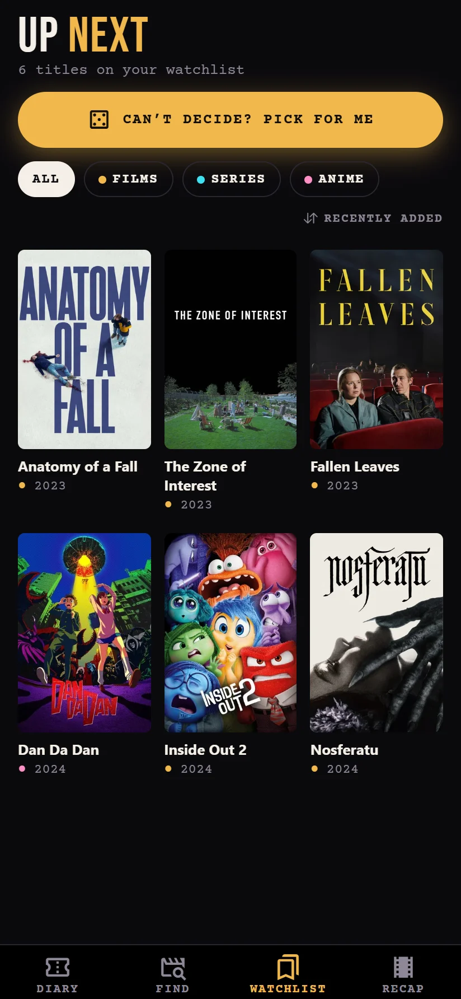
Everything stays on your phone. Lock the app with your fingerprint, back up to a file, and sign in only if you want your diary on another device too.

Watch Heart lays out your month at Instagram’s story size, ready to share. Pick a layout to see this October in all six palettes.
MarqueeFilm strip9 titles15 h
Oct 20261080 × 1920
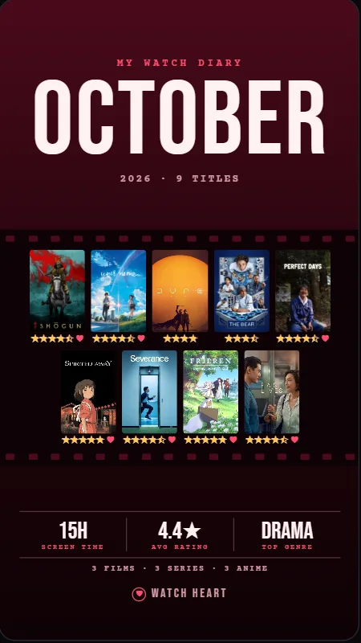
VelvetFilm strip9 titles15 h
Oct 20261080 × 1920
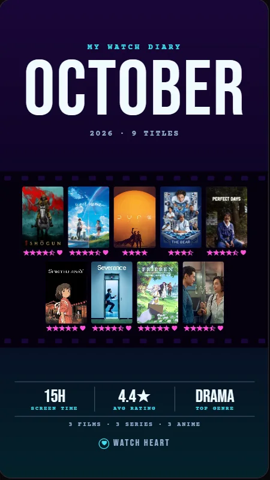
NeonFilm strip9 titles15 h
Oct 20261080 × 1920
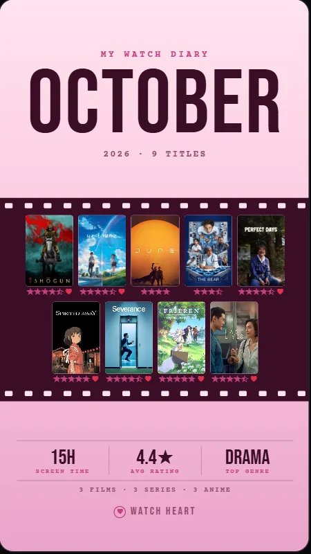
SakuraFilm strip9 titles15 h
Oct 20261080 × 1920
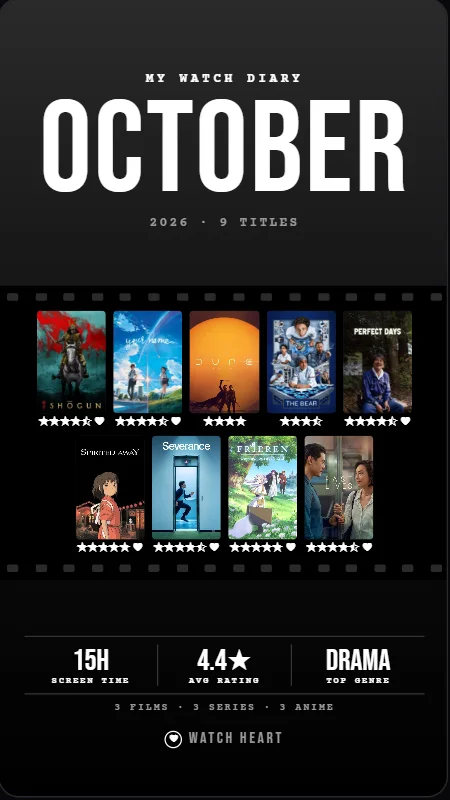
NoirFilm strip9 titles15 h
Oct 20261080 × 1920
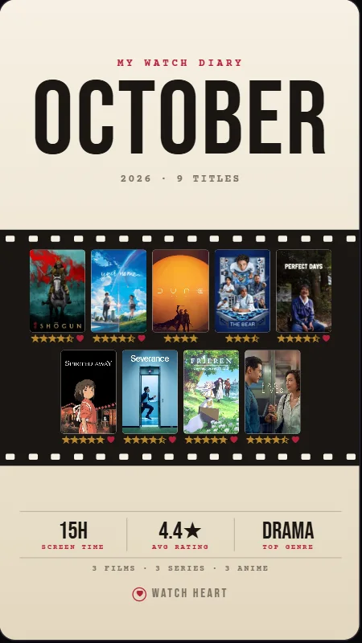
PaperFilm strip9 titles15 h
Oct 20261080 × 1920
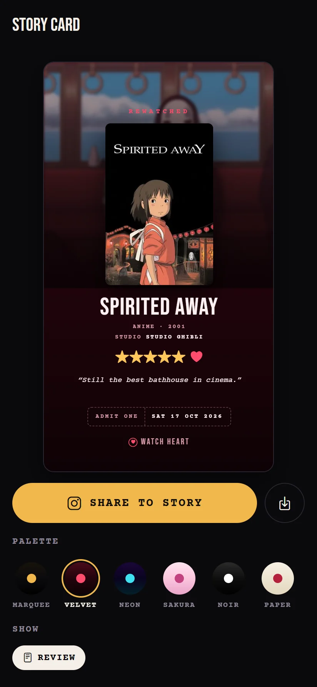
Story cardOne review5 starsVelvet
17 OctJust watched
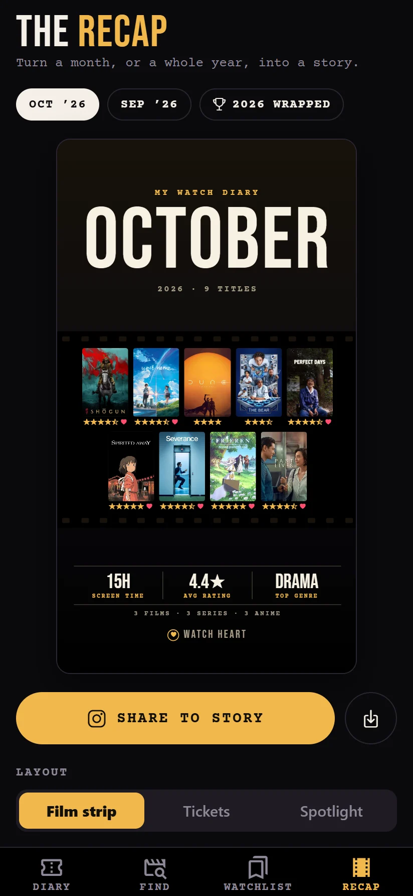
Recap tabMonth or yearShareSave
Any month2026 wrapped
Pick the file your old app exported, as it comes. Watch Heart reads it, adds what’s new and finds every poster on its own.
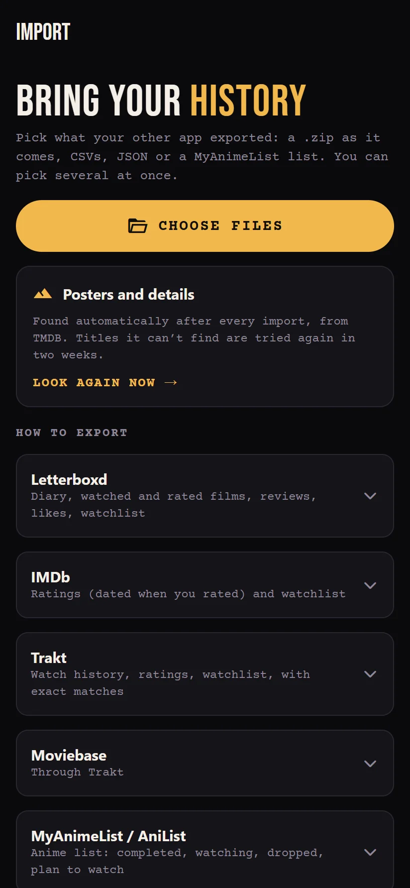
I wanted one place for everything I watch: the film on Friday, the series I finish on Sunday, the anime I swear is the last episode at 1 am.
So Watch Heart keeps every one of them in a single diary, with the dates, the stars and the words. Your diary stays on your phone. There are no ads and nothing to buy, and there won’t be.
The part I love most is the end of the month, when the reel turns into a story to share.
If something’s missing or broken, write to me. I read everything.
InigoMaker of Watch Heart and Prompt Heart
inigo@tosstheworld.orgIs it free? Yes, completely: no ads, no subscriptions and no paid extras.
Where is my diary kept? On your phone. If you sign in, a copy is kept in your private account so your devices stay in sync; nobody else can read it.
Do I need an account? No. Everything works without one. An account only adds backup and sync.
Where do the titles and posters come from? From TMDB, the free film and TV database, and from TVmaze for series.
Does it work for anime? Yes. Anime has its own tab, its own colour and studios in the credits, and Japanese animation is recognised automatically.
How do I post a story to Instagram? Open Recap, choose the month and a look, tap Share to story, then pick Instagram and Story. You can save it to your photos too.
Can I bring my Letterboxd history? Yes, and IMDb, Trakt, MyAnimeList, Netflix, Refract and more. See the programme above.
Can I leave and take my diary with me? Any time: export a full backup, a spreadsheet, or a file Letterboxd can import.
Is it on Google Play or iPhone? It’s an Android app, installed from the APK here for now. Google Play is next.
How do I delete my account? In the app: Settings, tap your email under Account, then Delete account. There’s also a page for it.
Install the APK, open Watch Heart and log the last thing you watched. Your first reel starts there.